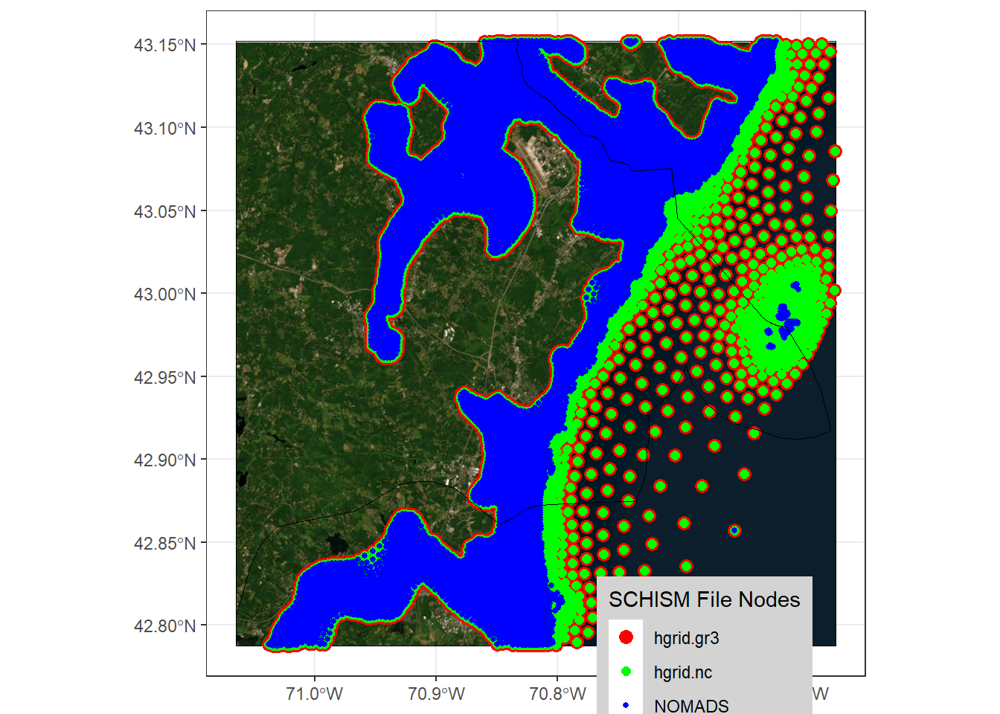

NOMADS_from_nwmTools <- nwmTools::get_nomads_urls(
output = 'total_water',
domain = 'atlgulf',
num = 18,
version = 'v3.0',
outdir = ".") %>%
nwmTools::get_timeseries(
index_id = c('SCHISM_hgrid_node_x', 'SCHISM_hgrid_node_y'),
varname = 'elevation'
)
NOMADS_from_nwmTools$max <- do.call(pmax, c(NOMADS_from_nwmTools[,3:ncol(NOMADS_from_nwmTools)], list(na.rm=TRUE)))
schism_df_sf <- sf::st_as_sf(NOMADS_from_nwmTools, coords=c("SCHISM_hgrid_node_x","SCHISM_hgrid_node_y")) |>
sf::st_set_crs(sf::st_crs("EPSG:4326"))SCHISM
Executive Summary
Probably best encapsulated by the authors: “SCHISM (Semi-implicit Cross-scale Hydroscience Integrated System Model) is an open-source community-supported modeling system based on unstructured grids, designed for seamless simulation of 3D baroclinic circulation across creek-lake-river-estuary-shelf-ocean scales. It uses a highly efficient and accurate semi-implicit finite-element/finite-volume method with Eulerian-Lagrangian algorithm to solve the Navier-Stokes equations (in hydrostatic form)…”. This model forms the core of OWP’s total water level prediction and has been deployed at scale across a number of domains. (“SCHISM Manual at Ccrm-Vims-Edu” n.d.)
Tutorials
Looking at interpolation differences
Pulling the maximum forecast (the easy way)
Pulling the maximum forecast (the hard way)
Sometimes nwmTools might not work as expected and so in those cases we have to replace all of the heavy lifting that the package does. This is generally not ideal but, much like you do math by hand for a bit until you’ve reached that level of technical understanding and complexity that the tools really start to shine and the values of hand calculations dwindle. Starting with an understanding of the forecast and releases cycle will help you predict the right timestep to look at, but you can also just try and guess at what you want by clicking around the NOMDAS server. Here we’ll pull in the short range forecast which we know has 18 timesteps, and we’ll brute force our way into the right time with a few handles, and match the format that nwmTools generates because we haven’t already made our lives hard enough.
outpath <- file.path("~/data/output/schism_forecast")
unlink(outpath)
is_quiet <- FALSE
## Get the timestamp for this run
first_valid_timestamp <- format(Sys.time(), tz = "GMT", format = "%Y-%m-%d %H:%M:%S")
first_valid_date <- gsub("-", "",format(Sys.time(), tz = "GMT", format = "%Y-%m-%d"))
first_valid_hour <- format(Sys.time(), tz = "GMT", format = "%H")
# -- Check to make sure I have the right date ---------------------------------------------------------------------------
testurl <- paste0('https://nomads.ncep.noaa.gov/pub/data/nccf/com/nwm/v3.0/nwm.', first_valid_date, '/short_range_coastal_atlgulf')
if (httr::http_error(testurl)) {
first_valid_date <- gsub("-", "",format(as.Date(first_valid_timestamp, tz = "GMT")-1, format = "%Y-%m-%d"))
}
# -- Guess at the most recent time ---------------------------------------------------------------------------------------
first_valid_hour <- 25
repeat {
first_valid_hour = first_valid_hour-1
run_time <- sprintf("%02d", first_valid_hour)
testurl <- paste0('https://nomads.ncep.noaa.gov/pub/data/nccf/com/nwm/v3.0/nwm.', first_valid_date,'/short_range_coastal_atlgulf/nwm.t', run_time, 'z.short_range_coastal.total_water.f018.atlgulf.nc')
if(!httr::http_error(testurl)) {
break
}
}
first_nomads_timestamp <- strptime(paste0(first_valid_date," ",run_time,':00:00'), format ="%Y%m%d %H:%M:%S",tz = "UTC")
for (i in sprintf("%03d",c(1:18))) {
# i = sprintf("%03d",c(1:18))[1]
url <- glue::glue("http://nomads.ncep.noaa.gov/pub/data/nccf/com/nwm/v3.0/nwm.{first_valid_date}/short_range_coastal_atlgulf/nwm.t{run_time}z.short_range_coastal.total_water.f{i}.atlgulf.nc")
download.file(url, file.path(outpath,"forecast",basename(url),fsep = .Platform$file.sep))
}
all_nc_timesteps <- list.files(file.path(outpath,"forecast",fsep = .Platform$file.sep),pattern = '*.nc$',full.names = TRUE) |> gtools::mixedsort()
nc_file <- ncdf4::nc_open(all_nc_timesteps[1])
x <- ncdf4::ncvar_get(nc_file,"SCHISM_hgrid_node_x")
y <- ncdf4::ncvar_get(nc_file,"SCHISM_hgrid_node_y")
z <- ncdf4::ncvar_get(nc_file,"elevation")
varname <- glue::glue('elevation_{sub("_"," ",ncdf4::ncatt_get(nc_file,0,attname="model_output_valid_time")$value)}')
NOMADS_from_files <- data.frame("SCHISM_hgrid_node_x" = x,
"SCHISM_hgrid_node_y" = y,
varname = z)
names(NOMADS_from_files)[names(NOMADS_from_files) == "varname"] <- glue::glue('elevation_{sub("_"," ",ncdf4::ncatt_get(nc_file,0,attname="model_output_valid_time")$value)}')
ncdf4::nc_close(nc_file)
j <- length(all_nc_timesteps)
for(i in 2:j) {
if(!is_quiet) { message(glue::glue("Folding in {i} of {j}")) }
nc_file <- ncdf4::nc_open(all_nc_timesteps[i])
NOMADS_from_files$varname <- ncdf4::ncvar_get(nc_file,"elevation")
names(NOMADS_from_files)[names(NOMADS_from_files) == "varname"] <- glue::glue('elevation_{sub("_"," ",ncdf4::ncatt_get(nc_file,0,attname="model_output_valid_time")$value)}')
ncdf4::nc_close(nc_file)
}
NOMADS_from_files$max <- do.call(pmax, c(NOMADS_from_files[,3:ncol(NOMADS_from_files)], list(na.rm=TRUE)))
## And the spatial object:
schism_df_sf <- sf::st_as_sf(NOMADS_from_files, coords=c("SCHISM_hgrid_node_x","SCHISM_hgrid_node_y")) |>
sf::st_set_crs(sf::st_crs("EPSG:4326"))A few examples of mapping meshes
There are several places to grab mesh elevations but the most authoritative is here:(https://www.nohrsc.noaa.gov/owp_files/nwm/nwm_parameters/README.v3.0.txt). There are a few files we can hunt down to find any differences.
- elev.ic: A .gr3 format file that specifies the initial elevation at each node.
- hgrid.gr3 and hgrid.ll: Horizontal grid file with node centered spatial data and mesh connectivity.
- hgrid.nc: grid file in netcdf format, containing a list of nodes with their locations and elevations along with a list of elements.
- hgrid.vtk: ASCII version of the grid file containing element number, element coordinates, and element original coordinates.
- And NOMADS short range outputs.
Of those, elev.ic seems inappropriate as it represents a “hot” start file since the average node elevation across the database is > 5? hgrid.nc is oddly formatted (as virtually every netcdf file seems to be), but more concretely I’m not seeing an elevation field. Regardless, we can still use the XY as a data point to sanity check. hgrid.vtk is aspatial/unscaled, let’s skip that headache for the time being. That gives us the following:
[1] "Are coordiantes identical?"identical(hgrid.gr3, hgrid.ll):TRUEidentical(hgrid.gr3, hgrid.nc):FALSE| File.testing | Number.of.nodes | Mean.Elevation |
|---|---|---|
| elev.ic | 10537609 | 5.735372 |
| hgrid.gr3 | 10537609 | -4.853219 |
| hgrid.ll | 10537609 | -4.853219 |
| hgrid.nc | 10537609 | NA |
| NOMADS | 10481055 | NA |
Just to make sure we’re not going insane, let’s take a look at these nodes along the U.S.’s shortest seacoast, New Hampshire!


Yup, we’ve lost it.
Mapping a mesh
As a finite element model, SCHISM’s numerical schema is constructed from nodes and the polygons that those nodes define between them. While it’s not typically needed to regenerate the polygons themselves since the model has given us an explicit forecast at the nodes, having access to those shapes is useful. For SCHISM, these are stored in the hgrid.gr3 file, which encodes the node centered spatial data and mesh connectivity as guessable text we can parse out like so:
Reference
Site head: https://ccrm.vims.edu/schismweb/ Online docs: https://schism-dev.github.io/schism/master/index.html
Explanations
STOFS P-Surge: Probabilistic Tropical Storm Surge c3
Related: SFINCS (Super-Fast Inundation of CoastS) developed by Deltares
References
“SCHISM Manual at Ccrm-Vims-Edu.” n.d. https://ccrm.vims.edu/schismweb/. Accessed April 2, 2025.